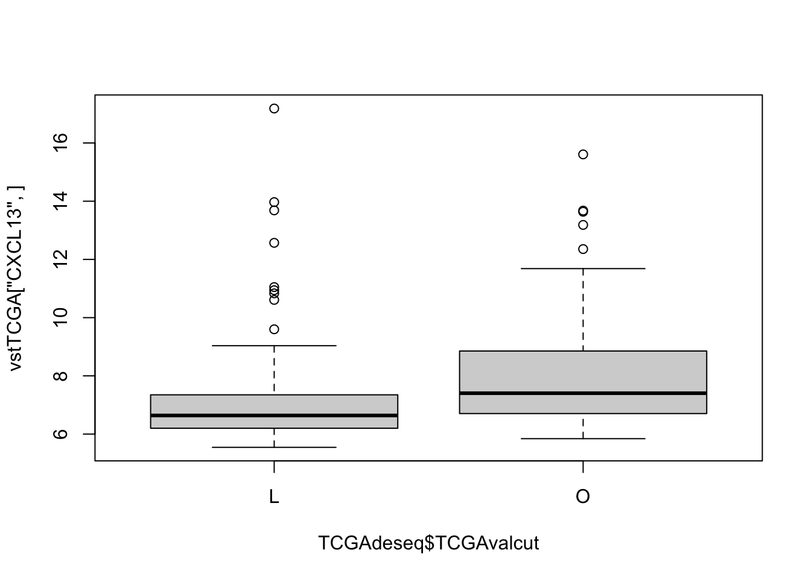
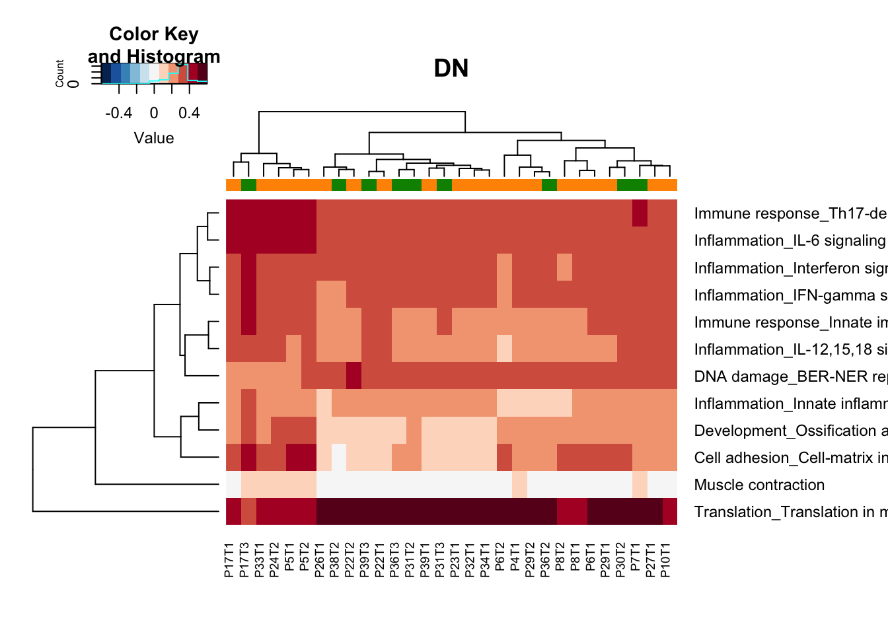
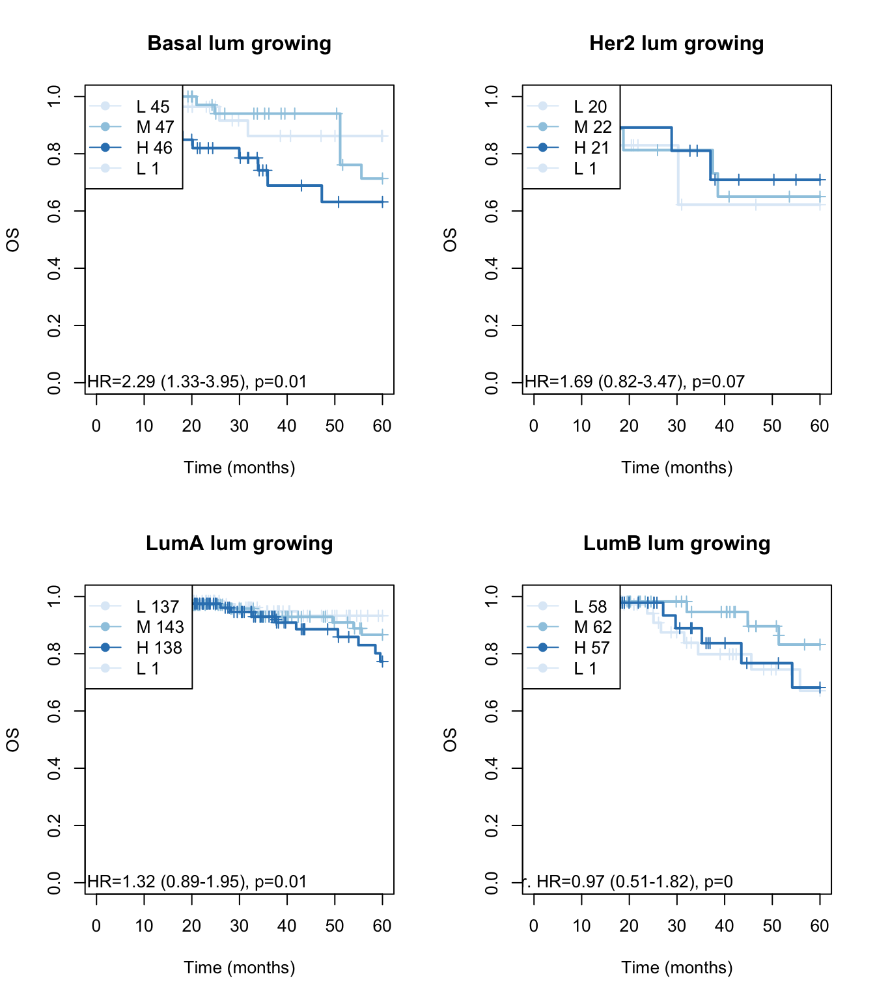

Chapter 9 DESeq analysis
This document sets up DESeq runs to compare:
- CD45 samples
- Ep samples
according to size of the cohort samples
9.1 CD45 samples
In section 6.2, we have noticed that some DN samples had expression of epithelial markers. Here, we perform a differential gene expression analysis to find genes which are different between these two fractions.
Below is a summary of the number of differential genes, using p value cut off of 0.05 and log2 fold change of 1.5 and base expression of 100+.
9.1.1 PCA plot
First, have a look at the samples in a PCA plot: do they separate based on size:

9.1.2 Differential Gene Expression
## [1] "significant differential genes"


 ### GSEA
### GSEA
Run GSEA. Here, we will look specifically at the Process Network pathways which are enriched
## -Preprocessing for input gene list and hit list ...
## --Removing genes without values in geneList ...
## --Removing duplicated genes ...
## --Converting annotations ...
## -- 476 genes (out of 11277) could not be mapped to any identifier, and were removed from the data.
## -- 12 genes (out of 330) could not be mapped to any identifier, and were removed from the data.
## --Ordering Gene List decreasingly ...
## -Preprocessing complete!## --184 gene sets don't have >= 5 overlapped genes with universe in gene set collection named c2List!
## --1100 gene sets don't have >= 5 overlapped genes with universe in gene set collection named c5BP!
## --328 gene sets don't have >= 5 overlapped genes with universe in gene set collection named c5MF!
## --140 gene sets don't have >= 5 overlapped genes with universe in gene set collection named c5CC!
## --395 gene sets don't have >= 5 overlapped genes with universe in gene set collection named MetPathway!
## -Performing hypergeometric analysis ...
## -Hypergeometric analysis complete
##
## -Performing gene set enrichment analysis using HTSanalyzeR2...
## --Calculating the permutations ...
## -Gene set enrichment analysis using HTSanalyzeR2 complete
## ==============================================##
## -No of genes in Gene set collections:
## input above min size
## c2List 2199 2015
## c5BP 7530 6430
## c5MF 1663 1335
## c5CC 999 859
## ProcessNetworks 158 158
## MetPathway 1480 1085
## Hallmark 50 50
##
##
## -No of genes in Gene List:
## input valid duplicate removed converted to entrez
## Gene List 11386 11386 11277 10801
##
##
## -No of hits:
## input preprocessed
## Hits 330 318
##
##
## -Parameters for analysis:
## minGeneSetSize pValueCutoff pAdjustMethod
## HyperGeo Test 5 0.05 BH
##
## minGeneSetSize pValueCutoff pAdjustMethod nPermutations exponent
## GSEA 5 0.05 BH 100 1
##
##
## -Significant gene sets (adjusted p-value< 0.05 ):
## c2List c5BP c5MF c5CC ProcessNetworks MetPathway Hallmark
## HyperGeo 11 24 10 16 0 0 3
## GSEA 258 593 178 100 28 141 13
## Both 10 18 10 12 0 0 2## quartz_off_screen
## 29.2 Epithelial samples
9.2.1 PCA plot
First, have a look at the samples in a PCA plot: do they separate based on size:

## [1] "significant differential genes"


9.2.2 GSEA
Run GSEA. Here, we will look specifically at the Process Network pathways which are enriched
## -Preprocessing for input gene list and hit list ...
## --Removing genes without values in geneList ...
## --Removing duplicated genes ...
## --Converting annotations ...
## -- 449 genes (out of 11863) could not be mapped to any identifier, and were removed from the data.
## -- 2 genes (out of 12) could not be mapped to any identifier, and were removed from the data.
## --Ordering Gene List decreasingly ...
## -Preprocessing complete!## --157 gene sets don't have >= 5 overlapped genes with universe in gene set collection named c2List!
## --926 gene sets don't have >= 5 overlapped genes with universe in gene set collection named c5BP!
## --302 gene sets don't have >= 5 overlapped genes with universe in gene set collection named c5MF!
## --125 gene sets don't have >= 5 overlapped genes with universe in gene set collection named c5CC!
## --384 gene sets don't have >= 5 overlapped genes with universe in gene set collection named MetPathway!
## -Performing hypergeometric analysis ...
## -Hypergeometric analysis complete
##
## -Performing gene set enrichment analysis using HTSanalyzeR2...
## --Calculating the permutations ...
## -Gene set enrichment analysis using HTSanalyzeR2 complete
## ==============================================##
## -No of genes in Gene set collections:
## input above min size
## c2List 2199 2042
## c5BP 7530 6604
## c5MF 1663 1361
## c5CC 999 874
## ProcessNetworks 158 158
## MetPathway 1480 1096
## Hallmark 50 50
##
##
## -No of genes in Gene List:
## input valid duplicate removed converted to entrez
## Gene List 11956 11956 11863 11414
##
##
## -No of hits:
## input preprocessed
## Hits 12 10
##
##
## -Parameters for analysis:
## minGeneSetSize pValueCutoff pAdjustMethod
## HyperGeo Test 5 0.05 BH
##
## minGeneSetSize pValueCutoff pAdjustMethod nPermutations exponent
## GSEA 5 0.05 BH 100 1
##
##
## -Significant gene sets (adjusted p-value< 0.05 ):
## c2List c5BP c5MF c5CC ProcessNetworks MetPathway Hallmark
## HyperGeo 0 0 0 0 0 0 0
## GSEA 224 703 163 88 40 62 10
## Both 0 0 0 0 0 0 0## quartz_off_screen
## 2